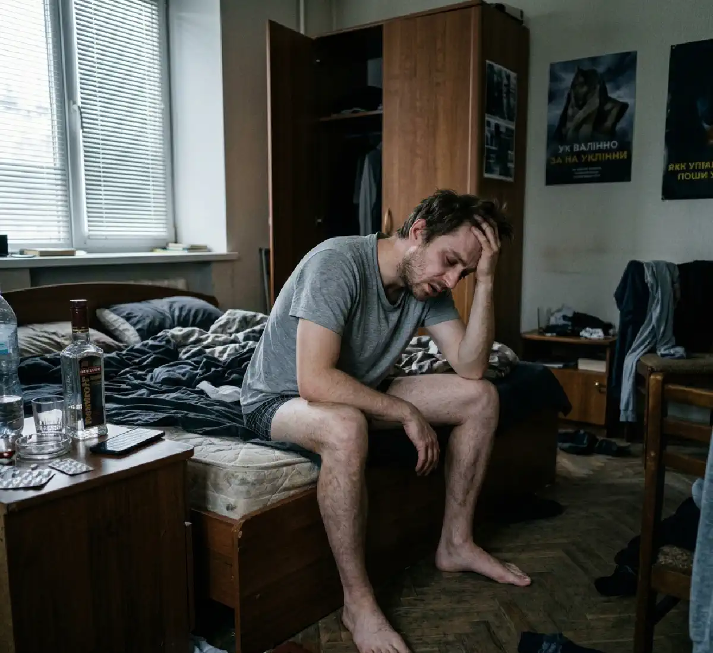

+38(068) 79 72 782
+38(068) 79 72 782Сильна слабкість після алкоголю: основні причини
Інформація, яку важливо знати


Безкоштовна консультація, працюємо цілодобово 24/7
Інформація, яку важливо знати

Дата написання: 18 квіт. 2026 р.
Останнє оновлення: 18 квіт. 2026 р.
Сильна слабкість після вживання алкоголю — частий стан, який виникає через токсичний вплив етанолу та продуктів його розпаду на організм. Навіть після невеликої кількості спиртного людина може відчувати занепад сил, запаморочення, сонливість, дратівливість, сухість у роті, нудоту та загальне виснаження. Особливо вираженою слабкість буває після великої кількості алкоголю, запою, поганого сну, зневоднення або за наявності хронічних захворювань.
Алкоголь впливає одразу на кілька систем організму: перевантажує печінку, порушує роботу нервової системи, погіршує стан судин і серця, змінює водно-сольовий баланс і сповільнює відновлювальні процеси. Тому слабкість після алкоголю — це не просто «звичайне похмілля», а сигнал про те, що організму потрібна підтримка і час для відновлення. Якщо стан легкий, людині часто допомагають відпочинок, вода, сон і щадне харчування. Але якщо слабкість виражена, супроводжується блюванням, тремором, стрибками тиску, прискореним серцебиттям, тривожністю, задишкою або сплутаністю свідомості, краще не займатися самолікуванням. У таких випадках може знадобитися медична допомога і контроль спеціаліста.
Після вживання спиртного організм починає переробляти етанол. У цьому процесі активно бере участь печінка, яка нейтралізує токсичні продукти розпаду алкоголю. На таку роботу потрібно багато ресурсів, тому після інтоксикації людина може відчувати сильну втому, розбитість і зниження працездатності.
Додатково алкоголь порушує роботу центральної нервової системи. Через це сповільнюються реакції, погіршується концентрація уваги, з’являється сонливість, дратівливість або емоційна нестабільність. Навіть якщо людина спала кілька годин, сон після алкоголю часто буває поверхневим і не дає повноцінного відновлення. Ще одна причина слабкості — порушення обміну речовин. Алкоголь впливає на рівень глюкози, роботу судин, баланс рідини та електролітів. У результаті організм гірше переносить навантаження, швидше втомлюється, а відновлення займає більше часу.
Алкоголь має сечогінний ефект, через що організм втрачає рідину швидше, ніж зазвичай. Разом із водою виводяться важливі електроліти: калій, натрій, магній та інші речовини, необхідні для нормальної роботи серця, м’язів і нервової системи. Саме тому після алкоголю часто з’являються сухість у роті, спрага, головний біль, слабкість, тремтіння в тілі та запаморочення.
Зневоднення також може викликати прискорене серцебиття, стрибки тиску, м’язову слабкість і відчуття «ватного» тіла. Чим більше алкоголю було випито, тим сильнішим може бути порушення водно-сольового балансу. Особливо важко організм відновлюється після тривалого вживання або запою.
У легких випадках важливо пити воду невеликими порціями, не перевантажувати шлунок і забезпечити спокій. Якщо ж слабкість супроводжується багаторазовим блюванням, вираженим тремором, неможливістю нормально пити воду або різким погіршенням стану, може знадобитися лікування алкогольної інтоксикації в Києві під наглядом спеціаліста.
Іноді слабкість після алкоголю може бути ознакою не просто похмілля, а серйознішого порушення в організмі. Особливо небезпечно, якщо стан погіршується поступово або до слабкості приєднуються додаткові симптоми.
Тривожними ознаками вважаються сильне серцебиття, перебої в роботі серця, різкі стрибки тиску, задишка, біль у грудях, виражене запаморочення, сплутаність свідомості, втрата орієнтації, судоми, сильна тривога або багаторазове блювання. Такі симптоми можуть вказувати на перевантаження серцево-судинної системи, порушення водно-електролітного балансу, тяжку інтоксикацію або ускладнення з боку нервової системи. У таких ситуаціях не можна чекати, що стан «сам мине». Самостійний прийом ліків може бути небезпечним, особливо якщо в організмі ще залишається алкоголь. При вираженій слабкості, треморі, нудоті, безсонні та стрибках тиску може знадобитися крапельниця від алкоголю в Харкові , щоб швидше відновити водно-сольовий баланс і знизити токсичне навантаження на організм.
При сильній слабкості після алкоголю важливо створити організму умови для відновлення. Насамперед потрібно забезпечити спокій, доступ свіжого повітря і достатню кількість рідини. Пити воду краще невеликими порціями, особливо якщо є нудота. Різке вживання великого об’єму рідини може спровокувати блювання і погіршити самопочуття. Харчування має бути легким. Підійдуть бульйон, каша, овочі, нежирні продукти, теплий чай. Жирна, гостра і важка їжа створює додаткове навантаження на шлунок і печінку, тому в перші години після інтоксикації її краще уникати.
Також важливо не перевантажувати організм фізично. Після алкоголю серцево-судинна система і нервова система перебувають у стані стресу, тому інтенсивні навантаження, баня, сауна або спроби «розігнати кров» можуть нашкодити. Краще дати організму час на відновлення. Якщо стан не покращується, слабкість посилюється, з’являється блювання, тремор, тривожність, біль у грудях, задишка або сплутаність свідомості, потрібна наркологічна допомога в Одесі . Лікар зможе оцінити стан пацієнта, визначити ризики і підібрати безпечну схему відновлення.
Якщо людині стало погано після алкоголю, її потрібно покласти в зручне положення і забезпечити приплив свіжого повітря. Якщо є нудота або блювання, краще покласти людину на бік, щоб знизити ризик потрапляння блювотних мас у дихальні шляхи. Не варто залишати пацієнта самого, особливо якщо він сильно ослаблений, дезорієнтований або сонливий.
Воду потрібно давати часто, але маленькими ковтками. При вираженій слабкості важливо уникати різких підйомів з ліжка, оскільки це може викликати запаморочення або втрату свідомості. Якщо людина скаржиться на серцебиття, біль у грудях, нестачу повітря, сильну тривогу або різкі стрибки тиску, краще не відкладати звернення до лікаря. Не можна самостійно змішувати препарати з алкоголем, давати сильні заспокійливі, знеболювальні або серцеві ліки без призначення спеціаліста. Неправильно підібрані препарати можуть погіршити стан, особливо якщо в людини є захворювання серця, печінки, нирок або нервової системи.
Крапельниця після алкоголю може бути ефективною при вираженій інтоксикації, зневодненні, слабкості, треморі, нудоті, тривожності, порушенні сну і загальному виснаженні. Інфузійна терапія допомагає швидше заповнити дефіцит рідини, відновити водно-сольовий баланс і підтримати роботу внутрішніх органів.
Склад крапельниці підбирається індивідуально. До неї можуть входити інфузійні розчини, електроліти, вітаміни групи B і C, препарати для підтримки печінки, серця та нервової системи, а також засоби для зменшення нудоти, тривожності, запаморочення або безсоння. Лікар оцінює тиск, пульс, скарги, тривалість вживання алкоголю та загальний стан пацієнта.
При сильній слабкості, вираженому зневодненні та загальному виснаженні може бути рекомендована детоксикація після алкоголю в Дніпрі . Такий підхід допомагає не просто тимчасово полегшити симптоми, а комплексно підтримати організм після токсичного навантаження. Важливо розуміти, що крапельниця знімає гострий стан, але не лікує алкогольну залежність. Якщо людина регулярно вживає спиртне, йде в запої або не може контролювати дозу, після стабілізації стану потрібно займатися причиною проблеми.
Після алкоголю серце і судини відчувають підвищене навантаження. У людини може частішати пульс, з’являтися відчуття перебоїв, важкість у грудях, тривожність або стрибки тиску. Це пов’язано зі зневодненням, втратою електролітів, впливом токсинів і навантаженням на нервову систему.
Особливо небезпечні такі симптоми у людей з гіпертонією, аритмією, ішемічною хворобою серця, зайвою вагою, захворюваннями судин або хронічним стресом. У таких випадках навіть звичайне похмілля може перебігати важче і супроводжуватися вираженою слабкістю. Якщо після алкоголю зберігаються сильне серцебиття, задишка, біль у грудях, потемніння в очах або виражене запаморочення, краще не ризикувати. Медичний контроль допомагає вчасно помітити ускладнення і підібрати безпечну допомогу.
Багато хто вважає, що алкоголь допомагає заснути, але насправді він погіршує якість сну. Людина може швидко заснути після вживання, але сон стає поверхневим, неспокійним і переривчастим. Порушуються фази глибокого сну, через що організм не встигає повноцінно відновитися.
Наступного дня це проявляється слабкістю, дратівливістю, тривожністю, зниженням концентрації, головним болем і відчуттям розбитості. При тривалому вживанні або запоях безсоння може посилюватися, а без алкоголю людині стає дедалі складніше заснути. Якщо алкоголь використовується як спосіб розслабитися або заснути, це тривожний сигнал. У таких випадках важливо не обмежуватися тільки відновленням після інтоксикації, а звернути увагу на ризик формування залежності.
Найкращий спосіб уникнути вираженої слабкості після алкоголю — не перевантажувати організм спиртним. Важливо контролювати кількість випитого, не вживати алкоголь натщесерце, пити воду під час застілля і уникати змішування різних напоїв. Повноцінний сон, нормальне харчування і відпочинок також допомагають знизити навантаження на організм.
Якщо після вживання алкоголю часто з’являються сильна слабкість, тремор, тривожність, головний біль, нудота або проблеми зі сном, це може свідчити про те, що організм погано переносить спиртне. У таких випадках краще переглянути ставлення до алкоголю і за необхідності звернутися до спеціаліста. При вираженій інтоксикації, особливо якщо стан супроводжується блюванням, зневодненням, тахікардією або стрибками тиску, може бути корисна крапельниця при алкогольній інтоксикації у Львові . Медична допомога допомагає швидше стабілізувати стан і знизити ризик ускладнень.
Похмеляння може тимчасово зменшити тривожність, слабкість або головний біль, але насправді воно не усуває причину поганого самопочуття. Організм усе ще перебуває в стані інтоксикації, а нова доза алкоголю тільки посилює навантаження на печінку, серце, судини і нервову систему.
Регулярне похмеляння особливо небезпечне, тому що формує звичку знімати погане самопочуття алкоголем. Так людина поступово переходить від епізодичного вживання до запійного типу поведінки. Спочатку алкоголь використовується «для полегшення», потім стає способом уникнути тривоги, тремору, безсоння і внутрішнього напруження. Набагато безпечніше відновлювати організм без повторного вживання спиртного: пити воду, відпочивати, харчуватися легкою їжею і за необхідності звертатися по медичну допомогу. Якщо стан тяжкий, краще обрати зняття алкогольної інтоксикації в Запоріжжі під контролем лікаря, а не намагатися полегшити симптоми новою дозою алкоголю.
Допомога нарколога потрібна, якщо слабкість після алкоголю виражена, стан не покращується, людина не може зупинити вживання, йде в запої або використовує алкоголь для зняття тривоги, безсоння і поганого самопочуття. Також звернутися до спеціаліста варто, якщо після спиртного з’являються тремор, блювання, стрибки тиску, прискорене серцебиття, панічні стани або сплутаність свідомості.
Якщо людині складно самостійно приїхати до клініки через слабкість, інтоксикацію або запійний стан, може знадобитися нарколог додому в Черкасах . Лікар оцінює стан пацієнта, проводить огляд, вимірює тиск і пульс, підбирає терапію та дає рекомендації щодо подальшого відновлення. Чим раніше людина отримує професійну допомогу, тим нижчий ризик ускладнень і тим вищий шанс не допустити переходу разової інтоксикації в повторні запої або залежність.
Сильна слабкість після алкоголю може бути пов’язана не лише зі зневодненням, а й із токсичним навантаженням, порушенням сну, дефіцитом електролітів, перевантаженням печінки, серцево-судинної та нервової системи. Тому відновлення має бути комплексним.
Важливо не тільки випити води і лягти спати, а й оцінити загальний стан. Якщо симптоми помірні, організму може вистачити відпочинку, рідини, легкого харчування і часу. Але при вираженій інтоксикації, запої або тривожних ознаках краще звернутися до лікаря. Медична допомога дозволяє швидше стабілізувати стан, знизити токсичне навантаження, відновити водно-сольовий баланс і зменшити ризик ускладнень. А якщо слабкість після алкоголю повторюється регулярно, варто замислитися не лише про зняття симптомів, а й про профілактику алкогольної залежності.

Статтю перевірено експертом
Могучев Станіслав
Лікар-терапевт, ординатор
Можливо цікава стаття:
Янтарна кислота, Бетаргін та Ентеросгель при алкогольної інтоксикації

Так, ми суворо дотримуємося повної конфіденційності на всіх етапах лікування. Інформація про пацієнта, діагноз та проходження терапії не передається третім особам. Звернення до нас не тягне за собою постановку на облік. Ви можете бути впевнені у безпеці та анонімності.
Програма лікування розробляється індивідуально після консультації з фахівцем. Враховуються вид залежності, її тривалість, фізичний та психологічний стан пацієнта. Такий підхід дозволяє підвищити ефективність терапії та знизити ризик зриву. Ми не використовуємо шаблонні рішення.
Так, ми супроводжуємо пацієнтів і після основного курсу лікування. Проводяться консультації, рекомендації щодо адаптації та профілактики рецидивів. За потреби можлива подальша психологічна підтримка. Це допомагає зберегти результат та повернутися до повноцінного життя.
Номер телефону:
+380 (68) 797 27 82
+380 (50) 021 69 57
Адресу наркологічного центра вашого міста уточнюйте за
телефоном
Працюємо: Київ, Одеса, Львів, Харків, Дніпро, Запоріжжя,
Черкасах, Чугуєві, Чорноморську, Кам'янському
Telegram: t.me/umbrellaplus
Графік работы: Цілодобово